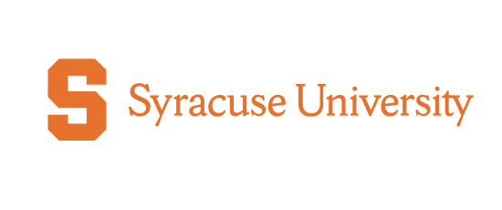

Computer Science B.S.
Campus Involvement
Women in Engineering sorority promoting female involvement and achievement in technical and scientific fields.
Weekly tutoring at Syracuse elementary schools helping kids improve in reading, math, and other subjects.
All-women Ultimate Frisbee club team that travelled around New England competing against other colleges.
Media Services Technician
Spent one year at Elon before transferring to Syracuse University. Worked in the university's Media Services department — set up AV systems, troubleshot issues during presentations, and recommended tools for different projects.
2015 – Present
Promotes child play therapy for homeless children in Boston.
Soup kitchen in Amherst catering to homeless individuals and families.
Space providing groceries, meals, clothing, and other necessities to individuals and families in need.